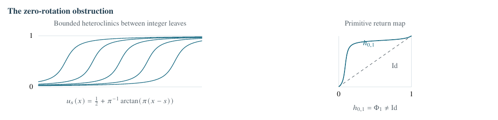
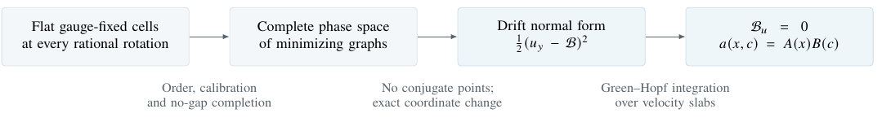

All-slope minimizing foliations do not imply rigidity without additional conditions. Identity holonomy at every rational slope restores rigidity through a new finite-amplitude resonant-cell classification.
Geometric Analysis
Downloadable summary PDF: open PDF.
Two rigidity theorems.Theorems 1.2 and 1.4
For \(u''=-V_u(x,u)\) with \(V\in C^\infty(\T^2)\), a class-A minimizing foliation at every primitive rational rotation \(-m/\ell\), with \[U_{m,\ell}(x+\ell,t)=U_{m,\ell}(x,t)-m, \qquad \gcd(m,\ell)=1,\quad \ell>0, \qquad\Longrightarrow\qquad V_u\equiv0.\] No irrational foliation, regularity in rotation, or transverse differentiability is assumed.
Independently, for every smooth positive \(a(x,c)\) on \(\T^2\), define the gauge-fixed rational energy \[E_{m,\ell}(Y)=\inf_{\substack{c(x+\ell)=c(x)-m\\ \Pi_{m,\ell}(c)=Y}} \frac{1}{2\ell}\int_0^\ell a(x,c)c'^2\dd x, \qquad \Pi_{m,\ell}(c)=\frac1\ell\int_0^\ell(mx+\ell c(x))\dd x\pmod\ell.\] With \(A,B\) smooth, positive and periodic, the exact classification is \[\boxed{\ \text{Every primitive }E_{m,\ell}\text{ is independent of }Y \ \Longleftrightarrow\ a(x,c)=A(x)B(c) \ \Longleftrightarrow\ (\log a)_{xc}=0.\ }\]

The action is \(\mathcal A_V[u]=\int(\tfrac12u'^2-V(x,u))\dd x\); class-A means minimizing on every compact interval against all fixed-endpoint Sobolev competitors. For \[V_*(u)=-\tfrac12\sin^4(\pi u),\qquad g_E(u)=\sqrt{\sin^4(\pi u)+2E},\] every branch \(u'=\sigma g_E(u)\), \(\sigma=\pm1\), is calibrated: \[\mathcal A_{V_*}[w]-\mathcal A_{V_*}[u] =\tfrac12\int(w'-\sigma g_E(w))^2\dd x\ge0.\] The period \(T(E)=\int_0^1g_E^{-1}\) decreases from infinity to zero, so positive energies realize all nonzero rotations \(\sigma/T(E)\). At zero energy, the flow of \(u'=\sin^2(\pi u)\) gives the bounded leaves above. Its nonidentity return is intrinsic: the only periodic class-A minimizers are integer constants, so no alternative closed zero-rotation foliation exists.
For rotation \(-m/\ell\), ordinary invariance allows \[U(x+\ell,t)=U(x,h_{m,\ell}(t))-m.\] Relabelling only conjugates \(h_{m,\ell}\). Requiring \(h_{m,\ell}=\Id\) closes each leaf, not merely the family. Ordered finite differences are then periodic positive solutions of a linear equation. Jacobi-field uniqueness and a Dirichlet implicit-function argument recover smooth transverse dependence and \(U_t>0\) from a merely continuous foliation.
Write the closed zero foliation as \(u=U_0(x,c)\), with \(U_{0,c}>0\). Its leaf field \(b_0\) defines a closed Hilbert form \[\omega_0=b_0\dd u-(\tfrac12b_0^2+V)\dd x.\] For an arbitrary graph \(u(x)=U_0(x,c(x))\), square completion gives \[(\tfrac12u'^2-V)\dd x =\omega_0|_{\mathrm{graph}\,u}+\tfrac12a(x,c)c'^2\dd x, \qquad a=U_{0,c}^2.\] The closed-form term cancels in fixed-endpoint and same-homology comparisons. Identity zero holonomy makes \(a\) periodic on the product torus. Without it, one obtains the different law \[a(x+1,c)=a(x,h(c))h'(c)^2,\] which is a quadratic density on a mapping torus.
The resonant variable has the unique decomposition \[mx+\ell c(x)=Y+\varphi(x),\qquad \int_0^\ell\varphi(x)\dd x=0.\] Allowing a free constant in \(\varphi\) would absorb \(Y\) and make the cell value flat for every \(a\). The fixed mean removes that degeneracy. The other closed rational foliations become full-winding minimizers in the zero coordinate, and their phase means cover every \(Y\). Consequently every genuine gauge-fixed cell is flat.
A constrained cell minimizer initially solves \[-(ac')'+\tfrac12a_c c'^2=\lambda.\] If \(E_{m,\ell}(Y)\) is constant, each constrained minimum is already a minimum over the entire winding class; thus \(\lambda=0\). Min–max splicing orders these minimizers, and the fixed phase makes them unique. Their family fills the configuration plane.
For \(H(x,c,p)=p^2/(2a)\), the rational momentum graph \(p=P_\rho(x,c)\) carries the closed form \[\lambda_\rho=P_\rho\dd c-H(x,c,P_\rho)\dd x.\] The Fenchel gap is exactly \[L_a-\lambda_\rho|_{\mathrm{graph}\,c} =\frac{(ac'-P_\rho)^2}{2a}.\] Hence every finite segment of every rational graph orbit is class-A minimizing, not just minimizing under a cell constraint.
Rational graphs are strictly ordered and have uniform Lipschitz bounds on bounded rotation sets, independent of the rational denominator. Their one-sided limits remain invariant and minimizing. A calibrated quadratic comparison eliminates rational gaps. At irrational rotation, circle translation numbers eliminate disjoint gaps; for touching boundaries, area preservation rules out infinitely many disjoint images of a positive-area gap component.
An explicit momentum bound gives properness as \(\rho\to\pm\infty\). Thus each fibre map \(\rho\mapsto P_\rho(x,c)\) is an increasing homeomorphism and \[\T^2\times\R_p=\bigsqcup_{\rho\in\R}\Gamma_\rho.\] Every Hamiltonian trajectory is therefore minimizing. Nonnegative index forms on all intervals, together with strict Dirichlet domain monotonicity, exclude conjugate points.

For the arbitrary positive coefficient \(a\), set \[\begin{aligned} I(x)&=\int_0^1\sqrt{a(x,s)}\dd s,\qquad S=\int_0^1 I(x)^{-2}\dd x,\\ F(x,c)&=I(x)^{-1}\int_0^c\sqrt{a(x,s)}\dd s, \qquad Y_x=I(x)^{-2}/S. \end{aligned}\] Under \(y=Y(x)\) and \(u=F(x,c)\), write the drift as \(\mathcal B(y,u)=SI(x)^2F_x(x,c)\). Then \[\int\tfrac12 a(x,c)c_x^2\dd x =S^{-1}\int\tfrac12(u_y-\mathcal B(y,u))^2\dd y.\] The transformation preserves winding, fixed-endpoint competitors, minimality and conjugate points. Its Euler and Jacobi equations have the form \[u_{yy}=Q_{\mathcal B},\quad Q_{\mathcal B}=\mathcal B_y+\mathcal B\mathcal B_u, \qquad J''=KJ,\quad K=(Q_{\mathcal B})_u.\] The crucial simplification is that \(K\) is independent of velocity. This makes integration over the noncompact velocity direction possible without assuming decay there.
If \(a=A(x)B(c)\), the coordinate \(z=\int_0^c\sqrt{B(s)}\dd s\) turns the cell into a weighted Dirichlet problem. With \(\beta=\int_0^1\sqrt B\), \[E_{m,\ell}(Y)=\frac{m^2\beta^2}{2\ell\int_0^\ell A(x)^{-1}\dd x},\] independent of \(Y\). Conversely, every nonseparable coefficient is detected by at least one primitive rational cell with unequal energies at two phases.
On \(\T^2\times\R_v\), the drift flow preserves \(\dd y\dd u\dd v\). No conjugate points yields a bounded measurable Green field \(r\) satisfying \[Dr+r^2=K,\qquad D=\partial_y+v\partial_u+Q_{\mathcal B}\partial_v.\] For the velocity-slab mass \[\mathcal H(R)=\int_{\T^2\times[-R,R]}r^2\dd y\dd u\dd v,\] periodicity removes the integral of \(K=(Q_{\mathcal B})_u\), while the two velocity faces give, for almost every \(R\), \[\mathcal H(R)^2\le2\|Q_{\mathcal B}\|_{L^2(\T^2)}^2\mathcal H'(R).\] Any positive value would force blow-up at finite \(R\). Hence \(r=0\) and \(K=0\). Along the complete drift characteristics, \(w=\mathcal B_u\) then solves \(w'=-w^2\); bounded periodicity forces \(w=0\). Since \[\mathcal B_u=SI(x)^2\frac{F_{xc}}{F_c},\] one obtains \(F_{xc}=0\) and \(a=I(x)^2G(c)^2\).
For \(a=U_{0,c}^2\), separability and the vertical deck law imply \(U_0(x,c)=\psi(x)+H(c)\). The zero-leaf equation becomes \[\psi''(x)=-V_u(x,\psi(x)+H(c)).\] Since \(H\) is onto, \(V_u\) is independent of \(u\). Its vertical mean vanishes by periodicity of \(V\), so \(V_u\equiv0\).
Scope. The rational-cell classification is global and finite-amplitude, with no smallness hypothesis. The original rigidity theorem needs only independently existing rational minimizing foliations with identity primitive holonomy; their transverse smoothness and the continuous phase-space completion are conclusions. Ordinary all-rotation foliations alone are insufficient.Source: Theorems 1.1, 1.2, 1.4, 8.7, 10.1 and 11.6; §13.
A rectangle in the covering plane. Coloured edges will be identified in pairs.
Each labelled leaf closes in its primitive class. This is the hypothesis used by the theorem.